Last updated: 2024-07-30
Checks: 6 1
Knit directory: SMART-CARE_LungCancer/
This reproducible R Markdown analysis was created with workflowr (version 1.7.1). The Checks tab describes the reproducibility checks that were applied when the results were created. The Past versions tab lists the development history.
Great! Since the R Markdown file has been committed to the Git repository, you know the exact version of the code that produced these results.
Great job! The global environment was empty. Objects defined in the global environment can affect the analysis in your R Markdown file in unknown ways. For reproduciblity it’s best to always run the code in an empty environment.
The command set.seed(20230425) was run prior to running
the code in the R Markdown file. Setting a seed ensures that any results
that rely on randomness, e.g. subsampling or permutations, are
reproducible.
Great job! Recording the operating system, R version, and package versions is critical for reproducibility.
Nice! There were no cached chunks for this analysis, so you can be confident that you successfully produced the results during this run.
Using absolute paths to the files within your workflowr project makes it difficult for you and others to run your code on a different machine. Change the absolute path(s) below to the suggested relative path(s) to make your code more reproducible.
| absolute | relative |
|---|---|
| /Users/qianwu/Desktop/SMART-CARE_LungCancer | . |
Great! You are using Git for version control. Tracking code development and connecting the code version to the results is critical for reproducibility.
The results in this page were generated with repository version 282daae. See the Past versions tab to see a history of the changes made to the R Markdown and HTML files.
Note that you need to be careful to ensure that all relevant files for
the analysis have been committed to Git prior to generating the results
(you can use wflow_publish or
wflow_git_commit). workflowr only checks the R Markdown
file, but you know if there are other scripts or data files that it
depends on. Below is the status of the Git repository when the results
were generated:
Ignored files:
Ignored: .DS_Store
Ignored: .RData
Ignored: .Rhistory
Ignored: analysis/.DS_Store
Ignored: code/.DS_Store
Ignored: data/.DS_Store
Ignored: data/Discovery/
Ignored: data/MethodDev/
Ignored: data/aliquot_metadata.xlsx
Ignored: data/metadata_latest/
Ignored: data/patient_metadata.xlsx
Ignored: data/sample_metadata.xlsx
Ignored: output/.DS_Store
Ignored: output/Discovery/
Ignored: output/MethodDev/
Ignored: output/SC_meeting/
Untracked files:
Untracked: analysis/CrossCohort_investigation_EXP.Rmd
Untracked: code/archive/
Untracked: code/data_availability.Rmd
Untracked: code/dataset_list.R
Untracked: code/workflowr_commands.R
Unstaged changes:
Modified: analysis/FeatSelection_ML.Rmd
Modified: analysis/MDev_Dis_02_soa_annotated_untargeted.Rmd
Note that any generated files, e.g. HTML, png, CSS, etc., are not included in this status report because it is ok for generated content to have uncommitted changes.
These are the previous versions of the repository in which changes were
made to the R Markdown
(analysis/Discovery_02_soa_DIA_Krij.Rmd) and HTML
(docs/Discovery_02_soa_DIA_Krij.html) files. If you’ve
configured a remote Git repository (see ?wflow_git_remote),
click on the hyperlinks in the table below to view the files as they
were in that past version.
| File | Version | Author | Date | Message |
|---|---|---|---|---|
| Rmd | eb0e30b | LiaoQianWu | 2024-07-30 | Train unsupervised MOFA model on combined tissue Klin. proteomics and annotated untargeted lipidomics and tidy up MOFA training results |
Description: Conduct univariate (t-test) and multivariate (PCA) analyses on individual datasets, i.e., Tissue and Plasma DIA Proteomics from AG Krijgsveld (2 datasets), to have overview of data and take initial look at data power in terms of predicting patient cancer recurrence.
Metadata variables
Patients who got Tissue samples (n = 43):
Recurrence -> Cancer recurrences, Yes:No = 19:24
Gender -> Female:Male = 18:25
Age -> Diagnosis ages ranging from 51 to 76
Smoking -> Smoker:Ex-smoker:Non-Smoker = 11:26:6
Stage -> Pathological stages, IB:IIA:IIB = 25:6:12
Adjuvant -> Adjuvant chemotherapy, True:False = 14:29
Samples:
Condition -> Tumor:Normal = 1:1
Patients who got Baseline Plasma samples (n = 63):
Recurrence -> Cancer recurrences, Yes:No = 24:39
Gender -> Female:Male = 28:35
Age -> Diagnosis ages ranging from 40 to 82
Smoking -> Smoker:Ex-smoker:Non-Smoker = 16:40:7
Stage -> Pathological stages, IB:IIA:IIB = 39:13:11
Adjuvant -> Adjuvant chemotherapy, True:False = 20:43
Load libraries
library('pcaMethods')
library('limma')
library('proDA')
library('pheatmap')
library('ggplotify')
library('ggrepel')
library('SummarizedExperiment')
library('tidyverse')
# Load user-defined functions
source('./code/analysis_pipeline.R')
source('./code/misc.R')
# Set plot theme
th <- theme_bw(base_size = 15) +
theme(axis.title = element_text(face = 'bold'),
axis.text = element_text(face = 'bold'),
axis.ticks = element_line(linewidth = 0.8),
legend.text = element_text(size = 15))Display associations between cancer recurrence and the other patient metadata variables to identify potential predictors (or confounders)
# Test associations between cancer recurrence and the other patient metadata variables
# Prepare patient metadata
proTissue <- readRDS('./data/Discovery/AG_Krijgsveld/proTissueVsn.rds')
patientMetadat <- tibble::as_tibble(colData(proTissue)) %>%
dplyr::filter(!duplicated(Patient)) %>%
dplyr::select(Patient, Recurrence, Gender, Age, Smoking, Stage, Adjuvant)
patientRecur <- dplyr::select(patientMetadat, Patient, Recurrence)
patientMetadat <- dplyr::select(patientMetadat, -Recurrence)
testAsso(patientMetadat, patientRecur, cmn_col = 'Patient') %>%
dplyr::select(-Stat) Var1 Var2 pVal pValAdj Test
1 Stage Recurrence 0.0672640 0.3235498 Chi-square
2 Adjuvant Recurrence 0.1294199 0.3235498 Chi-square
3 Smoking Recurrence 0.3318727 0.5531212 Chi-square
4 Age Recurrence 0.7376735 0.7777288 T-test
5 Gender Recurrence 0.7777288 0.7777288 Chi-square# Load preprocessed data
proTissue <- readRDS('./data/Discovery/AG_Krijgsveld/proTissueVsn.rds')
# Prepare feature annotation table
featAnnoTab <- tibble::as_tibble(rowData(proTissue), rownames = 'Protein') %>%
dplyr::select(Protein, Genes) %>%
dplyr::rename(Gene = Genes) %>%
tibble::column_to_rownames('Protein')
# Perform single-omics analysis
proTissueRes <- doSOA(proTissue, meta_var = 'Condition', pca_method = 'ppca', do_onlyPCA = T)Do metadata-assisted quality control
After testing associations between PCs and tissue sample conditions, we
found that PC1 significantly separates Tumor and Normal samples, which
indicates decent data quality. Yet, there are 4 Tumor samples
misclassified, reported as follows:
=> Tumor purity: I0HVOL_TU - 87% / 7EAOX7_TU - 70% / MJMTYR_TU - 40%
/ XFKHGP_TU - 100%
(Mean of sample tumor cell contents is 74%, ranging from 40% to
100%.)
pcTab <- proTissueRes$pcTab %>%
dplyr::mutate(Label = dplyr::case_when(Sample %in% c('I0HVOL_TU', '7EAOX7_TU',
'MJMTYR_TU', 'XFKHGP_TU',
'XFKHGP_NG', 'MJMTYR_NG',
'I0HVOL_NG', '7EAOX7_NG') ~ Sample))
ggplot(pcTab, aes(x=Condition, y=`PC1 (31.5%)`, color=Condition, fill=Condition, label=Label)) +
geom_boxplot(alpha = 0.7, outlier.shape = NA) +
geom_jitter(position = position_jitter(0.3), size = 3, show.legend = F) +
geom_text_repel(show.legend = F) +
scale_color_brewer(palette = 'Dark2') +
scale_fill_brewer(palette = 'Dark2') +
labs(x = 'Sample condition') +
th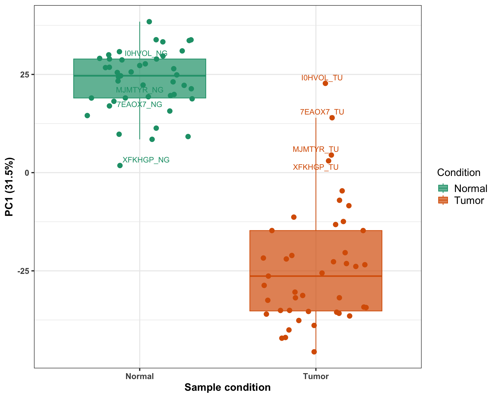 => Tumor and Normal tissue samples will be analyzed separately for two reasons: (1) They are characteristically different and might be offsets to each other, and (2) Normal tissues is always obtainable in case that Tumor tissues were not preserved after surgery.
# Subset certain samples
proTumor <- proTissue[, which(colData(proTissue)$Condition == 'Tumor')]
# Perform single-omics analysis
proTumorRes <- doSingleOmicsAnalysis(proTumor, soa_metaVar = 'Recurrence', num_sigFeats = 6,
pca_method = 'ppca', num_PCs = 40, num_PCfeats = 30,
use_limma = F, use_proDA = T, feat_anno = featAnnoTab,
feat_conv = T, plot_title = NULL, show_rownames = F,
pca_metaVar = c('Recurrence', 'Gender', 'Age',
'Smoking', 'Stage', 'Adjuvant', 'TumorPurity'))Display significant associations between PCs (Var1) and sample metadata variables (Var2) to overview sources of variance in data
proTumorRes$data.var.source Var1 Var2 pVal pValAdj Stat Test
1 PC4 (6.2%) TumorPurity 6.94e-06 0.00194 0.627 Correlation
2 PC1 (13.5%) TumorPurity 1.38e-04 0.01930 0.549 Correlation
3 PC20 (1.8%) Stage 3.65e-03 0.34000 6.480 ANOVA
4 PC19 (1.8%) Gender 9.51e-03 0.66600 2.720 T-test
5 PC20 (1.8%) Recurrence 1.76e-02 0.86200 -2.470 T-test
6 PC24 (1.4%) Smoking 2.06e-02 0.86200 4.290 ANOVA
7 PC13 (2.3%) Adjuvant 2.41e-02 0.86200 -2.340 T-test
8 PC15 (2%) Age 2.51e-02 0.86200 -0.341 Correlation
9 PC4 (6.2%) Gender 2.77e-02 0.86200 2.280 T-test
10 PC27 (1.3%) Age 3.18e-02 0.88800 0.328 Correlation
11 PC11 (2.6%) Stage 3.49e-02 0.88800 3.650 ANOVA
12 PC18 (1.8%) Gender 3.87e-02 0.90100 2.140 T-test
13 PC20 (1.8%) Adjuvant 4.23e-02 0.90100 -2.100 T-test
14 PC17 (1.9%) Smoking 4.50e-02 0.90100 3.350 ANOVA
15 PC8 (3.2%) Adjuvant 5.00e-02 0.91900 -2.020 T-testDisplay significant associations between features (Var1) and cancer recurrence (Var2). Owing to missing values, there may be situation that only few observations in sample groups, resulting in unreliable t-statistics. To this end, we used probabilistic dropout model (proDA) to account for data missingness.
proTumorRes$sig.feat.tab Var1 Var2 pVal pValAdj Stat Test Gene
1 Q9BPZ7 Recurrence 0.000969 1 3.56 T-test (proDA) MAPKAP1
2 Q9BVT8 Recurrence 0.002990 1 3.16 T-test (proDA) TMUB1
3 O14569 Recurrence 0.003430 1 -3.11 T-test (proDA) CYB561D2
4 Q9UIG8 Recurrence 0.004150 1 -3.04 T-test (proDA) SLCO3A1
5 Q9H2U1 Recurrence 0.004870 1 2.98 T-test (proDA) DHX36
6 P56962 Recurrence 0.005850 1 -2.91 T-test (proDA) STX17
7 O14737 Recurrence 0.005950 1 2.90 T-test (proDA) PDCD5
8 Q9UBW7 Recurrence 0.007220 1 2.83 T-test (proDA) ZMYM2
9 P49589 Recurrence 0.007960 1 2.79 T-test (proDA) CARS1
10 Q13822 Recurrence 0.008110 1 2.78 T-test (proDA) ENPP2
11 Q9BSD7 Recurrence 0.008680 1 -2.76 T-test (proDA) NTPCR
12 P03950 Recurrence 0.010600 1 -2.68 T-test (proDA) ANG
13 Q07092 Recurrence 0.010800 1 -2.67 T-test (proDA) COL16A1
14 Q9H444 Recurrence 0.010800 1 2.67 T-test (proDA) CHMP4B
15 Q8IZV5 Recurrence 0.011100 1 -2.66 T-test (proDA) RDH10
16 Q9P0P8 Recurrence 0.012000 1 -2.63 T-test (proDA) MTRES1
17 O00519 Recurrence 0.012100 1 -2.62 T-test (proDA) FAAH
18 Q6P4E1 Recurrence 0.012400 1 -2.62 T-test (proDA) GOLM2
19 O43823 Recurrence 0.014100 1 -2.56 T-test (proDA) AKAP8
20 Q53H47 Recurrence 0.014500 1 -2.55 T-test (proDA) SETMAR
21 P18074 Recurrence 0.015000 1 2.54 T-test (proDA) ERCC2
22 Q9P0J0 Recurrence 0.015300 1 -2.53 T-test (proDA) NDUFA13
23 Q15047 Recurrence 0.016300 1 2.51 T-test (proDA) SETDB1
24 Q9Y6G9 Recurrence 0.016700 1 2.49 T-test (proDA) DYNC1LI1
25 Q9H1E3 Recurrence 0.017200 1 2.48 T-test (proDA) NUCKS1
26 Q9NR19 Recurrence 0.017200 1 -2.48 T-test (proDA) ACSS2
27 O75911 Recurrence 0.017500 1 -2.48 T-test (proDA) DHRS3
28 Q15024 Recurrence 0.017500 1 -2.48 T-test (proDA) EXOSC7
29 Q9UN36 Recurrence 0.018200 1 -2.46 T-test (proDA) NDRG2
30 Q68DK2 Recurrence 0.018300 1 2.46 T-test (proDA) ZFYVE26
31 Q9NRN7 Recurrence 0.018300 1 2.46 T-test (proDA) AASDHPPT
32 P06127 Recurrence 0.018500 1 -2.45 T-test (proDA) CD5
33 Q8IZP7 Recurrence 0.018700 1 -2.45 T-test (proDA) HS6ST3
34 Q07820 Recurrence 0.018800 1 2.45 T-test (proDA) MCL1
35 Q9HB71 Recurrence 0.018800 1 2.45 T-test (proDA) CACYBP
36 Q96EQ0 Recurrence 0.018900 1 2.45 T-test (proDA) SGTB
37 Q96Q05 Recurrence 0.018900 1 -2.44 T-test (proDA) TRAPPC9
38 Q5SNT2 Recurrence 0.019000 1 -2.44 T-test (proDA) TMEM201
39 Q96HL8 Recurrence 0.019800 1 -2.43 T-test (proDA) SH3YL1
40 Q01484 Recurrence 0.020300 1 -2.41 T-test (proDA) ANK2
41 Q14671 Recurrence 0.020300 1 2.41 T-test (proDA) PUM1
42 O75438 Recurrence 0.020600 1 -2.41 T-test (proDA) NDUFB1
43 Q96PE7 Recurrence 0.020600 1 -2.41 T-test (proDA) MCEE
44 Q9BVS5 Recurrence 0.020600 1 -2.41 T-test (proDA) TRMT61B
45 Q8TB24 Recurrence 0.020900 1 2.40 T-test (proDA) RIN3
46 O14653 Recurrence 0.021000 1 -2.40 T-test (proDA) GOSR2
47 Q12768 Recurrence 0.021400 1 2.39 T-test (proDA) WASHC5
48 Q4LDE5 Recurrence 0.021500 1 -2.39 T-test (proDA) SVEP1
49 Q86SK9 Recurrence 0.021800 1 -2.39 T-test (proDA) SCD5
50 Q9BZL4 Recurrence 0.022000 1 -2.38 T-test (proDA) PPP1R12C
51 P11908 Recurrence 0.022200 1 -2.38 T-test (proDA) PRPS2
52 Q13057 Recurrence 0.022200 1 -2.38 T-test (proDA) COASY
53 Q93034 Recurrence 0.022200 1 2.38 T-test (proDA) CUL5
54 O14495 Recurrence 0.022500 1 -2.37 T-test (proDA) PLPP3
55 P40222 Recurrence 0.023900 1 -2.35 T-test (proDA) TXLNA
56 Q8NBN7 Recurrence 0.024300 1 -2.34 T-test (proDA) RDH13
57 Q53H12 Recurrence 0.024400 1 2.34 T-test (proDA) AGK
58 Q96QD9 Recurrence 0.024600 1 -2.33 T-test (proDA) FYTTD1
59 O14936 Recurrence 0.024900 1 -2.33 T-test (proDA) CASK
60 P49959 Recurrence 0.025200 1 2.32 T-test (proDA) MRE11
61 O60268 Recurrence 0.025800 1 -2.31 T-test (proDA) KIAA0513
62 O43674 Recurrence 0.026400 1 -2.30 T-test (proDA) NDUFB5
63 P62826 Recurrence 0.027500 1 2.29 T-test (proDA) RAN
64 Q8NE01 Recurrence 0.027500 1 -2.29 T-test (proDA) CNNM3
65 Q13425 Recurrence 0.027700 1 -2.28 T-test (proDA) SNTB2
66 O43776 Recurrence 0.027800 1 2.28 T-test (proDA) NARS1
67 Q8WW12 Recurrence 0.028000 1 2.28 T-test (proDA) PCNP
68 Q16512 Recurrence 0.028200 1 2.27 T-test (proDA) PKN1
69 P53597 Recurrence 0.028300 1 -2.27 T-test (proDA) SUCLG1
70 O00168 Recurrence 0.029000 1 -2.26 T-test (proDA) FXYD1
71 Q92974 Recurrence 0.029600 1 2.25 T-test (proDA) ARHGEF2
72 P48634 Recurrence 0.030000 1 2.25 T-test (proDA) PRRC2A
73 Q92973 Recurrence 0.030700 1 2.24 T-test (proDA) TNPO1
74 Q9UEU0 Recurrence 0.031000 1 -2.23 T-test (proDA) VTI1B
75 P41250 Recurrence 0.031100 1 2.23 T-test (proDA) GARS1
76 P48736 Recurrence 0.031100 1 2.23 T-test (proDA) PIK3CG
77 Q86SX6 Recurrence 0.031200 1 -2.23 T-test (proDA) GLRX5
78 P08243 Recurrence 0.032600 1 2.21 T-test (proDA) ASNS
79 P08651 Recurrence 0.032900 1 -2.21 T-test (proDA) NFIC
80 P57740 Recurrence 0.033200 1 2.20 T-test (proDA) NUP107
81 O00461 Recurrence 0.033300 1 -2.20 T-test (proDA) GOLIM4
82 Q92878 Recurrence 0.033300 1 2.20 T-test (proDA) RAD50
83 Q9UGI8 Recurrence 0.033400 1 2.20 T-test (proDA) TES
84 O00483 Recurrence 0.033800 1 -2.20 T-test (proDA) NDUFA4
85 Q9NXR1 Recurrence 0.034100 1 2.19 T-test (proDA) NDE1
86 Q9BQ61 Recurrence 0.034400 1 2.19 T-test (proDA) TRIR
87 Q9Y625 Recurrence 0.034500 1 2.19 T-test (proDA) GPC6
88 Q15386 Recurrence 0.034600 1 2.19 T-test (proDA) UBE3C
89 Q96HY6 Recurrence 0.035000 1 -2.18 T-test (proDA) DDRGK1
90 Q9UII2 Recurrence 0.035100 1 2.18 T-test (proDA) ATP5IF1
91 Q9Y4I1 Recurrence 0.035100 1 2.18 T-test (proDA) MYO5A
92 Q9ULQ1 Recurrence 0.035500 1 2.17 T-test (proDA) TPCN1
93 Q96P44 Recurrence 0.035700 1 -2.17 T-test (proDA) COL21A1
94 Q8NG11 Recurrence 0.035800 1 2.17 T-test (proDA) TSPAN14
95 Q04941 Recurrence 0.037100 1 2.15 T-test (proDA) PLP2
96 Q5VYK3 Recurrence 0.037300 1 2.15 T-test (proDA) ECPAS
97 Q6P1N0 Recurrence 0.037600 1 -2.15 T-test (proDA) CC2D1A
98 P30085 Recurrence 0.037700 1 -2.15 T-test (proDA) CMPK1
99 Q8NF91 Recurrence 0.038400 1 -2.14 T-test (proDA) SYNE1
100 Q9H3Q1 Recurrence 0.038600 1 -2.14 T-test (proDA) CDC42EP4
101 Q14166 Recurrence 0.039400 1 2.13 T-test (proDA) TTLL12
102 Q12972 Recurrence 0.039500 1 -2.13 T-test (proDA) PPP1R8
103 O00712 Recurrence 0.039900 1 -2.12 T-test (proDA) NFIB
104 Q99614 Recurrence 0.040100 1 -2.12 T-test (proDA) TTC1
105 P07332 Recurrence 0.040200 1 2.12 T-test (proDA) FES
106 O15357 Recurrence 0.040300 1 2.12 T-test (proDA) INPPL1
107 P36404 Recurrence 0.040300 1 -2.12 T-test (proDA) ARL2
108 Q86Y39 Recurrence 0.040300 1 -2.12 T-test (proDA) NDUFA11
109 Q9H8Y5 Recurrence 0.040500 1 2.12 T-test (proDA) ANKZF1
110 O96000 Recurrence 0.041100 1 -2.11 T-test (proDA) NDUFB10
111 P43250 Recurrence 0.041200 1 2.11 T-test (proDA) GRK6
112 Q9Y672 Recurrence 0.041700 1 -2.10 T-test (proDA) ALG6
113 Q8N118 Recurrence 0.042000 1 -2.10 T-test (proDA) CYP4X1
114 Q5SY16 Recurrence 0.042100 1 2.10 T-test (proDA) NOL9
115 Q86VS8 Recurrence 0.042100 1 2.10 T-test (proDA) HOOK3
116 P51911 Recurrence 0.042300 1 -2.10 T-test (proDA) CNN1
117 P60953 Recurrence 0.042300 1 2.10 T-test (proDA) CDC42
118 Q9H977 Recurrence 0.043600 1 -2.08 T-test (proDA) WDR54
119 Q9HD15 Recurrence 0.043900 1 -2.08 T-test (proDA) SRA1
120 Q96I36 Recurrence 0.044100 1 -2.08 T-test (proDA) COX14
121 Q9NRW1 Recurrence 0.044300 1 -2.08 T-test (proDA) RAB6B
122 P01893 Recurrence 0.044400 1 -2.07 T-test (proDA) HLA-H
123 Q9H9J2 Recurrence 0.044500 1 -2.07 T-test (proDA) MRPL44
124 O95563 Recurrence 0.044600 1 -2.07 T-test (proDA) MPC2
125 P49354 Recurrence 0.044700 1 2.07 T-test (proDA) FNTA
126 O43493 Recurrence 0.044800 1 -2.07 T-test (proDA) TGOLN2
127 Q14232 Recurrence 0.044900 1 2.07 T-test (proDA) EIF2B1
128 Q96C01 Recurrence 0.045200 1 2.07 T-test (proDA) FAM136A
129 Q86UA1 Recurrence 0.045300 1 -2.06 T-test (proDA) PRPF39
130 Q8N2K0 Recurrence 0.045300 1 2.06 T-test (proDA) ABHD12
131 Q8TC26 Recurrence 0.045300 1 -2.06 T-test (proDA) TMEM163
132 Q9NTX5 Recurrence 0.045400 1 -2.06 T-test (proDA) ECHDC1
133 Q9Y5Q8 Recurrence 0.045400 1 -2.06 T-test (proDA) GTF3C5
134 Q8IZL8 Recurrence 0.045900 1 2.06 T-test (proDA) PELP1
135 P00395 Recurrence 0.046300 1 -2.05 T-test (proDA) MT-CO1
136 O75347 Recurrence 0.046800 1 2.05 T-test (proDA) TBCA
137 Q92934 Recurrence 0.047000 1 -2.05 T-test (proDA) BAD
138 Q8WWQ2 Recurrence 0.047300 1 -2.04 T-test (proDA) HPSE2
139 Q7L5Y9 Recurrence 0.047600 1 2.04 T-test (proDA) MAEA
140 P08236 Recurrence 0.048200 1 -2.04 T-test (proDA) GUSB
141 Q9UNH6 Recurrence 0.048300 1 -2.04 T-test (proDA) SNX7
142 P20585 Recurrence 0.048500 1 2.03 T-test (proDA) MSH3
143 P19320 Recurrence 0.048600 1 2.03 T-test (proDA) VCAM1
144 O00244 Recurrence 0.048800 1 2.03 T-test (proDA) ATOX1
145 Q96JI7 Recurrence 0.048800 1 2.03 T-test (proDA) SPG11
146 P17813 Recurrence 0.049100 1 -2.03 T-test (proDA) ENG
147 Q9NWU1 Recurrence 0.049100 1 -2.03 T-test (proDA) OXSM
148 P25098 Recurrence 0.049400 1 2.02 T-test (proDA) GRK2
149 P63027 Recurrence 0.049500 1 -2.02 T-test (proDA) VAMP2
150 Q99543 Recurrence 0.049500 1 -2.02 T-test (proDA) DNAJC2
151 Q12913 Recurrence 0.049600 1 2.02 T-test (proDA) PTPRJ
152 Q9NXA8 Recurrence 0.049800 1 -2.02 T-test (proDA) SIRT5Visualize molecular signatures of significant features in data. Note that features in rows are ordered by t-statistics.
proTumorRes$sig.feat.heat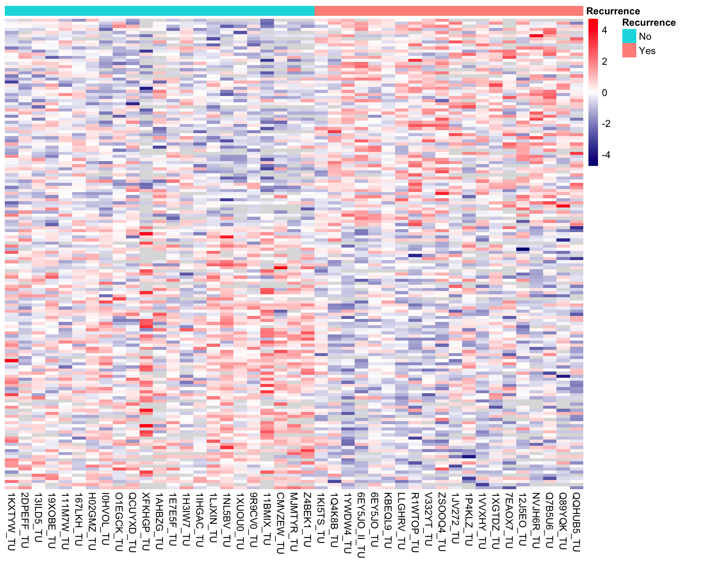
Visualize top significant features identified in Tumor samples (ns: p > 0.05, \(*\): p <= 0.05, \(**\): p <= 0.01)
# Prepare data matrix and metadata including both Tumor and Normal samples
datMat <- proTissueRes$data
smpAnnoTab <- proTissueRes$smpMetadata
# Prepare significant feature table
featSigAssoTab <- proTumorRes$sig.feat.tab
num_sigFeats <- 6
gpLevel = c('Yes_Tumor', 'No_Tumor', 'Yes_Normal', 'No_Normal')
condiCol = c('grey50', 'firebrick') #c(Normal, Tumor)
# Extract top significant features and prepare needed information
topSigFeats <- featSigAssoTab[1:num_sigFeats,] %>%
dplyr::select(Var1, Gene) %>%
dplyr::mutate(newVar1 = paste0(Var1, ' (', Gene, ')'),
newVar1 = factor(newVar1, levels = unique(newVar1)))
topSigFeatDat <- tibble::as_tibble(datMat[topSigFeats$Var1,], rownames = 'Var1') %>%
tidyr::pivot_longer(cols = -'Var1', names_to = 'Sample', values_to = 'Abundance') %>%
dplyr::left_join(topSigFeats, by = 'Var1') %>%
dplyr::left_join(smpAnnoTab, by = 'Sample') %>%
dplyr::mutate(Recur_Condi = paste0(Recurrence, '_', Condition),
Recur_Condi = factor(Recur_Condi, levels = gpLevel))
ggplot(topSigFeatDat, aes(x=Recur_Condi, y=Abundance, col=Condition, fill=Recurrence)) +
geom_boxplot(alpha = 1, outlier.shape = NA, linewidth = 1) +
geom_jitter(position = position_jitter(0.2), size = 2, show.legend = F) +
ggpubr::stat_compare_means(method = 't.test', paired = F, method.args = list(var.equal = T),
comparisons = list(c('Yes_Tumor', 'No_Tumor'), c('Yes_Normal', 'No_Normal')),
label = 'p.signif', tip.length = 0.015, bracket.size = 0.7, size = 4) +
labs(x = 'Recurrence') +
scale_color_manual(values = condiCol) +
scale_fill_manual(values=c('#00BFC4', '#F8766D')) +
facet_wrap(vars(newVar1), scales = 'free') +
th + theme(strip.text = element_text(size = 13, face = 'bold'),
axis.text.x = element_text(angle = 45, hjust = 1, vjust = 1))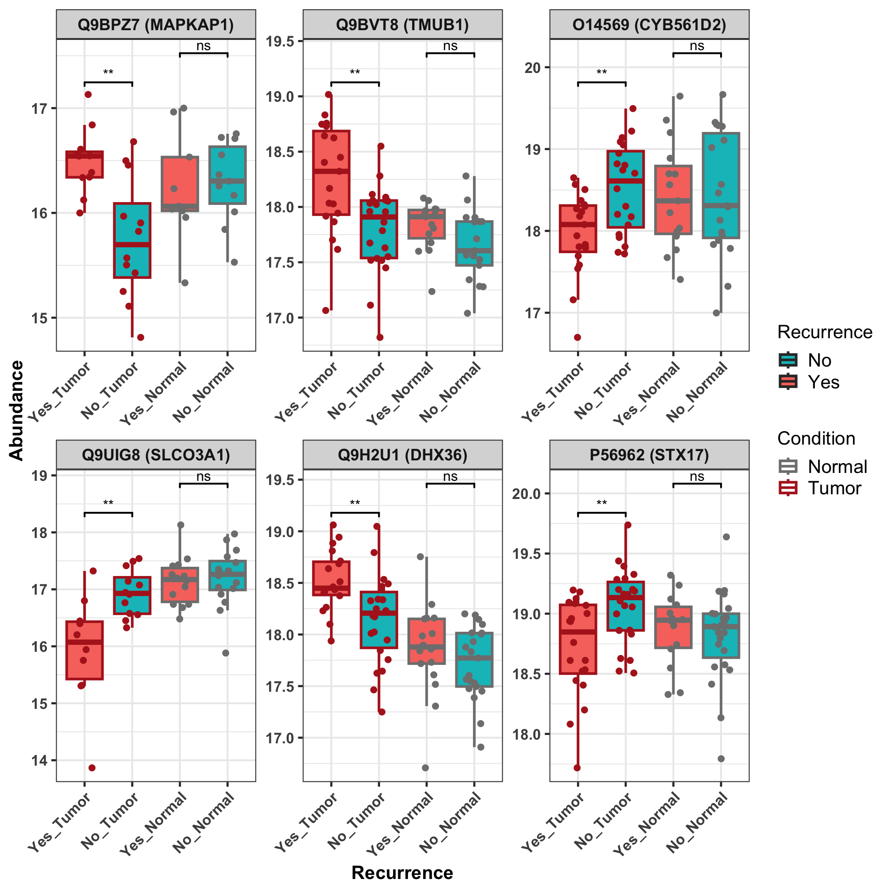
Assess data power by p-value histogram
proTumorRes$pval.hist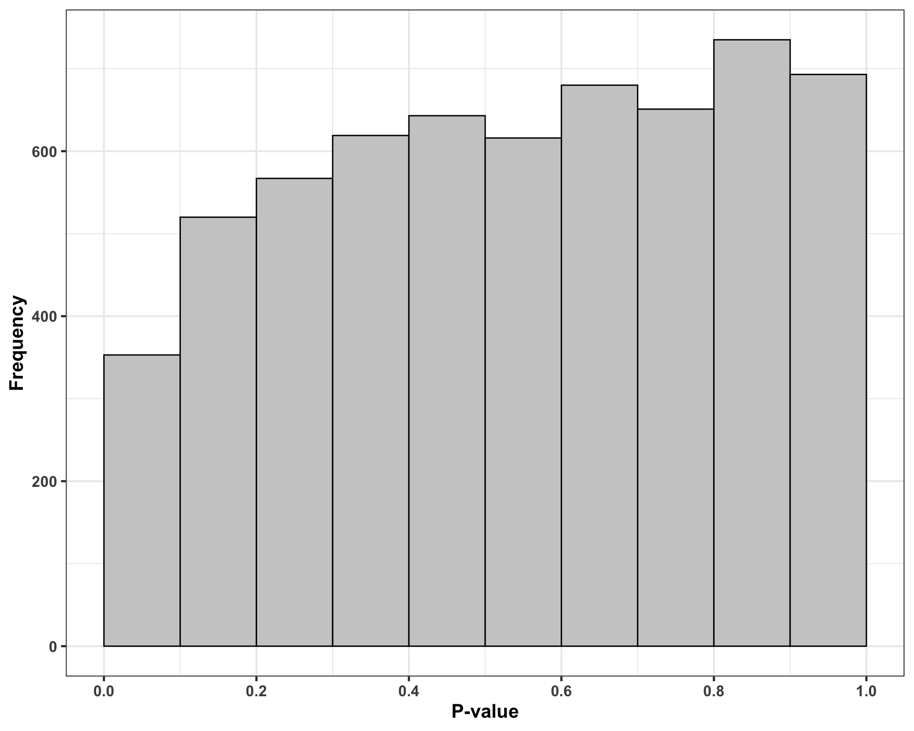
Display significant associations between PCs (Var1) and cancer recurrence (Var2)
proTumorRes$sig.pc.tab Var1 Var2 pVal pValAdj Stat Test
1 PC20 (1.8%) Recurrence 0.0176 0.706 -2.47 T-testVisualize significant PCs and display their top features with greatest absolute loadings
proTumorRes$sig.pc.dist$PC20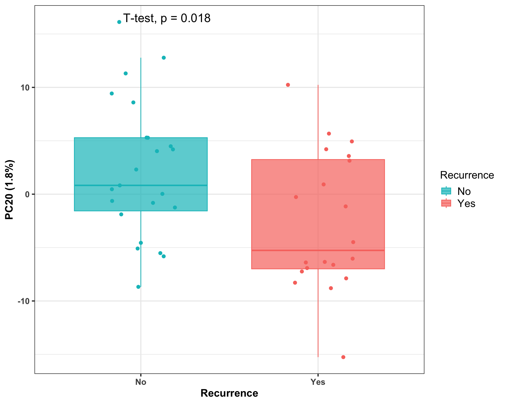
proTumorRes$pc.top.feat.tab$PC20 Feature Loading Gene
1 P19075 -0.1170 TSPAN8
2 O43927 0.1070 CXCL13
3 P31513 0.0966 FMO3
4 Q08357 0.0826 SLC20A2
5 O76070 -0.0772 SNCG
6 Q13938 0.0771 CAPS
7 O95436 0.0765 SLC34A2
8 P06731 -0.0728 CEACAM5
9 Q6UXB2 0.0726 CXCL17
10 P01861 0.0701 IGHG4
11 O95171 0.0680 SCEL
12 P15502 0.0641 ELN
13 Q01581 0.0638 HMGCS1
14 Q9UHK6 0.0634 AMACR
15 Q9C040 0.0626 TRIM2
16 P05114 -0.0602 HMGN1
17 P50440 -0.0592 GATM
18 Q9BV36 -0.0578 MLPH
19 Q96EU7 0.0566 C1GALT1C1
20 Q9UDR5 0.0565 AASS
21 P17213 0.0559 BPI
22 P29373 0.0558 CRABP2
23 P05109 0.0558 S100A8
24 O00501 0.0555 CLDN5
25 Q9GZU1 0.0555 MCOLN1
26 P15088 0.0554 CPA3
27 P08514 -0.0553 ITGA2B
28 Q9HC84 0.0552 MUC5B
29 P34913 -0.0541 EPHX2
30 P35527 -0.0541 KRT9# Subset certain samples
proNormal <- proTissue[, which(colData(proTissue)$Condition == 'Normal')]
# Perform single-omics analysis
proNormalRes <- doSingleOmicsAnalysis(proNormal, soa_metaVar = 'Recurrence', num_sigFeats = 6,
pca_method = 'ppca', num_PCs = 40, num_PCfeats = 30,
use_limma = F, use_proDA = T, feat_anno = featAnnoTab,
feat_conv = T, plot_title = NULL, show_rownames = F,
pca_metaVar = c('Recurrence', 'Gender', 'Age',
'Smoking', 'Stage', 'Adjuvant'))Message: Not all sample's metadata is complete.Display significant associations between PCs (Var1) and sample metadata variables (Var2) to overview sources of variance in data
proNormalRes$data.var.source Var1 Var2 pVal pValAdj Stat Test
1 PC8 (3.6%) Age 0.00238 0.418 0.451 Correlation
2 PC7 (4%) Recurrence 0.00348 0.418 -3.100 T-test
3 PC8 (3.6%) Gender 0.01460 0.799 2.550 T-test
4 PC40 (0.5%) Adjuvant 0.01470 0.799 -2.550 T-test
5 PC3 (8.4%) Gender 0.02240 0.799 2.370 T-test
6 PC5 (4.8%) Adjuvant 0.02680 0.799 -2.300 T-test
7 PC38 (0.6%) Recurrence 0.02690 0.799 -2.300 T-test
8 PC9 (3.3%) Age 0.02840 0.799 -0.334 Correlation
9 PC32 (0.8%) Smoking 0.03910 0.799 3.520 ANOVA
10 PC13 (2.2%) Smoking 0.03960 0.799 3.500 ANOVA
11 PC7 (4%) Adjuvant 0.04150 0.799 -2.100 T-test
12 PC29 (1%) Smoking 0.04250 0.799 3.420 ANOVA
13 PC12 (2.5%) Gender 0.04380 0.799 -2.080 T-test
14 PC5 (4.8%) Stage 0.04920 0.799 3.250 ANOVADisplay significant associations between features (Var1) and cancer recurrence (Var2)
proNormalRes$sig.feat.tab Var1 Var2 pVal pValAdj Stat Test Gene
1 Q32P28 Recurrence 4.99e-05 0.261 4.53 T-test (proDA) P3H1
2 Q12872 Recurrence 8.58e-05 0.261 -4.36 T-test (proDA) SFSWAP
3 Q9NX05 Recurrence 3.21e-04 0.537 -3.93 T-test (proDA) FAM120C
4 Q96LD4 Recurrence 4.21e-04 0.537 3.84 T-test (proDA) TRIM47
5 Q9BUR5 Recurrence 5.20e-04 0.537 -3.77 T-test (proDA) APOO
6 P78346 Recurrence 5.30e-04 0.537 3.76 T-test (proDA) RPP30
7 Q96T58 Recurrence 7.80e-04 0.544 -3.63 T-test (proDA) SPEN
8 P29317 Recurrence 9.37e-04 0.544 -3.57 T-test (proDA) EPHA2
9 Q68CP4 Recurrence 9.74e-04 0.544 3.55 T-test (proDA) HGSNAT
10 O15379 Recurrence 1.06e-03 0.544 -3.52 T-test (proDA) HDAC3
11 Q96CG8 Recurrence 1.07e-03 0.544 3.52 T-test (proDA) CTHRC1
12 O94788 Recurrence 1.18e-03 0.544 3.49 T-test (proDA) ALDH1A2
13 Q6VN20 Recurrence 1.23e-03 0.544 -3.47 T-test (proDA) RANBP10
14 P50454 Recurrence 1.25e-03 0.544 3.47 T-test (proDA) SERPINH1
15 O60701 Recurrence 1.46e-03 0.591 3.41 T-test (proDA) UGDH
16 O15460 Recurrence 1.63e-03 0.617 3.37 T-test (proDA) P4HA2
17 Q8TED1 Recurrence 1.84e-03 0.658 3.33 T-test (proDA) GPX8
18 O15075 Recurrence 2.17e-03 0.734 3.27 T-test (proDA) DCLK1
19 P18887 Recurrence 2.45e-03 0.777 3.23 T-test (proDA) XRCC1
20 Q9H6K4 Recurrence 2.56e-03 0.777 -3.21 T-test (proDA) OPA3
21 Q16799 Recurrence 3.17e-03 0.918 -3.13 T-test (proDA) RTN1
22 Q01433 Recurrence 3.40e-03 0.939 3.11 T-test (proDA) AMPD2
23 O14548 Recurrence 3.66e-03 0.968 -3.08 T-test (proDA) COX7A2L
24 Q9Y2Q9 Recurrence 3.90e-03 0.972 -3.06 T-test (proDA) MRPS28
25 Q07065 Recurrence 4.00e-03 0.972 3.05 T-test (proDA) CKAP4
26 Q5VW36 Recurrence 4.41e-03 0.999 3.01 T-test (proDA) FOCAD
27 O75695 Recurrence 4.53e-03 0.999 -3.00 T-test (proDA) RP2
28 Q96KR1 Recurrence 4.84e-03 0.999 2.98 T-test (proDA) ZFR
29 O43760 Recurrence 5.02e-03 0.999 -2.97 T-test (proDA) SYNGR2
30 P00338 Recurrence 5.02e-03 0.999 2.97 T-test (proDA) LDHA
31 Q96AY3 Recurrence 5.12e-03 0.999 2.96 T-test (proDA) FKBP10
32 O95671 Recurrence 5.44e-03 0.999 2.94 T-test (proDA) ASMTL
33 Q96AZ6 Recurrence 5.51e-03 0.999 -2.93 T-test (proDA) ISG20
34 P37235 Recurrence 5.71e-03 0.999 -2.92 T-test (proDA) HPCAL1
35 Q6ZVM7 Recurrence 6.05e-03 0.999 -2.89 T-test (proDA) TOM1L2
36 Q96BP3 Recurrence 6.24e-03 0.999 2.88 T-test (proDA) PPWD1
37 P49257 Recurrence 6.58e-03 0.999 2.86 T-test (proDA) LMAN1
38 Q9UNX3 Recurrence 6.78e-03 0.999 -2.85 T-test (proDA) RPL26L1
39 Q9H488 Recurrence 6.81e-03 0.999 2.85 T-test (proDA) POFUT1
40 Q13308 Recurrence 6.91e-03 0.999 2.84 T-test (proDA) PTK7
41 P50151 Recurrence 6.95e-03 0.999 -2.84 T-test (proDA) GNG10
42 P14625 Recurrence 7.19e-03 0.999 2.83 T-test (proDA) HSP90B1
43 Q9BSR8 Recurrence 7.33e-03 0.999 2.82 T-test (proDA) YIPF4
44 O75940 Recurrence 7.64e-03 0.999 2.81 T-test (proDA) SMNDC1
45 Q00341 Recurrence 7.74e-03 0.999 2.80 T-test (proDA) HDLBP
46 P29373 Recurrence 8.48e-03 0.999 2.77 T-test (proDA) CRABP2
47 Q9UBS8 Recurrence 8.52e-03 0.999 -2.76 T-test (proDA) RNF14
48 O94819 Recurrence 9.17e-03 0.999 2.73 T-test (proDA) KBTBD11
49 Q9UBG0 Recurrence 9.32e-03 0.999 2.73 T-test (proDA) MRC2
50 P23921 Recurrence 9.55e-03 0.999 -2.72 T-test (proDA) RRM1
51 Q9BSD7 Recurrence 9.75e-03 0.999 -2.71 T-test (proDA) NTPCR
52 P15529 Recurrence 1.03e-02 0.999 -2.69 T-test (proDA) CD46
53 Q14938 Recurrence 1.03e-02 0.999 2.69 T-test (proDA) NFIX
54 O43708 Recurrence 1.05e-02 0.999 2.68 T-test (proDA) GSTZ1
55 O60784 Recurrence 1.09e-02 0.999 2.67 T-test (proDA) TOM1
56 Q8N8A6 Recurrence 1.12e-02 0.999 -2.65 T-test (proDA) DDX51
57 Q9BV38 Recurrence 1.13e-02 0.999 2.65 T-test (proDA) WDR18
58 Q9NRW3 Recurrence 1.14e-02 0.999 2.65 T-test (proDA) APOBEC3C
59 Q05707 Recurrence 1.15e-02 0.999 2.65 T-test (proDA) COL14A1
60 P47895 Recurrence 1.16e-02 0.999 2.64 T-test (proDA) ALDH1A3
61 O94855 Recurrence 1.17e-02 0.999 2.64 T-test (proDA) SEC24D
62 Q6NWY9 Recurrence 1.17e-02 0.999 -2.64 T-test (proDA) PRPF40B
63 Q02809 Recurrence 1.18e-02 0.999 2.64 T-test (proDA) PLOD1
64 Q6ZMZ3 Recurrence 1.18e-02 0.999 2.64 T-test (proDA) SYNE3
65 P28702 Recurrence 1.23e-02 0.999 2.62 T-test (proDA) RXRB
66 P49773 Recurrence 1.26e-02 0.999 -2.61 T-test (proDA) HINT1
67 Q9BZE9 Recurrence 1.26e-02 0.999 2.61 T-test (proDA) ASPSCR1
68 P08670 Recurrence 1.28e-02 0.999 2.60 T-test (proDA) VIM
69 P30536 Recurrence 1.30e-02 0.999 -2.60 T-test (proDA) TSPO
70 P15428 Recurrence 1.33e-02 0.999 -2.59 T-test (proDA) HPGD
71 Q8TCZ2 Recurrence 1.33e-02 0.999 -2.59 T-test (proDA) CD99L2
72 P07585 Recurrence 1.40e-02 0.999 2.57 T-test (proDA) DCN
73 P29972 Recurrence 1.44e-02 0.999 -2.56 T-test (proDA) AQP1
74 P36269 Recurrence 1.44e-02 0.999 2.56 T-test (proDA) GGT5
75 P48059 Recurrence 1.44e-02 0.999 -2.56 T-test (proDA) LIMS1
76 Q9HCN4 Recurrence 1.44e-02 0.999 2.56 T-test (proDA) GPN1
77 Q9BUJ2 Recurrence 1.45e-02 0.999 2.55 T-test (proDA) HNRNPUL1
78 Q9P2B2 Recurrence 1.47e-02 0.999 2.55 T-test (proDA) PTGFRN
79 O60333 Recurrence 1.48e-02 0.999 -2.54 T-test (proDA) KIF1B
80 Q8WUY1 Recurrence 1.50e-02 0.999 -2.54 T-test (proDA) THEM6
81 Q6P3W7 Recurrence 1.51e-02 0.999 2.54 T-test (proDA) SCYL2
82 P48595 Recurrence 1.52e-02 0.999 -2.53 T-test (proDA) SERPINB10
83 P22059 Recurrence 1.53e-02 0.999 2.53 T-test (proDA) OSBP
84 O15439 Recurrence 1.55e-02 0.999 2.53 T-test (proDA) ABCC4
85 Q15811 Recurrence 1.55e-02 0.999 2.53 T-test (proDA) ITSN1
86 Q9BY43 Recurrence 1.62e-02 0.999 2.51 T-test (proDA) CHMP4A
87 Q9NNX6 Recurrence 1.62e-02 0.999 2.51 T-test (proDA) CD209
88 Q9BT73 Recurrence 1.63e-02 0.999 2.51 T-test (proDA) PSMG3
89 Q70UQ0 Recurrence 1.65e-02 0.999 2.50 T-test (proDA) IKBIP
90 Q9NV88 Recurrence 1.65e-02 0.999 2.50 T-test (proDA) INTS9
91 Q9UI10 Recurrence 1.65e-02 0.999 2.50 T-test (proDA) EIF2B4
92 Q9NZN3 Recurrence 1.66e-02 0.999 -2.50 T-test (proDA) EHD3
93 P78406 Recurrence 1.69e-02 0.999 2.49 T-test (proDA) RAE1
94 P55087 Recurrence 1.71e-02 0.999 -2.49 T-test (proDA) AQP4
95 O60488 Recurrence 1.73e-02 0.999 -2.48 T-test (proDA) ACSL4
96 Q9BRT2 Recurrence 1.74e-02 0.999 -2.48 T-test (proDA) UQCC2
97 P17706 Recurrence 1.75e-02 0.999 -2.48 T-test (proDA) PTPN2
98 O94979 Recurrence 1.81e-02 0.999 2.46 T-test (proDA) SEC31A
99 Q8NFX7 Recurrence 1.84e-02 0.999 -2.46 T-test (proDA) STXBP6
100 P12268 Recurrence 1.85e-02 0.999 2.45 T-test (proDA) IMPDH2
101 P55899 Recurrence 1.90e-02 0.999 2.44 T-test (proDA) FCGRT
102 P62136 Recurrence 1.90e-02 0.999 -2.44 T-test (proDA) PPP1CA
103 Q09161 Recurrence 1.91e-02 0.999 -2.44 T-test (proDA) NCBP1
104 P11802 Recurrence 1.94e-02 0.999 2.43 T-test (proDA) CDK4
105 Q8WYP5 Recurrence 1.94e-02 0.999 2.43 T-test (proDA) AHCTF1
106 Q9Y4P3 Recurrence 1.94e-02 0.999 2.43 T-test (proDA) TBL2
107 P10599 Recurrence 2.02e-02 0.999 -2.42 T-test (proDA) TXN
108 Q12769 Recurrence 2.05e-02 0.999 2.41 T-test (proDA) NUP160
109 Q9Y394 Recurrence 2.05e-02 0.999 -2.41 T-test (proDA) DHRS7
110 Q92896 Recurrence 2.06e-02 0.999 2.41 T-test (proDA) GLG1
111 P46937 Recurrence 2.07e-02 0.999 2.41 T-test (proDA) YAP1
112 Q96NT0 Recurrence 2.07e-02 0.999 -2.41 T-test (proDA) CCDC115
113 Q8N335 Recurrence 2.11e-02 0.999 -2.40 T-test (proDA) GPD1L
114 Q9Y291 Recurrence 2.12e-02 0.999 -2.40 T-test (proDA) MRPS33
115 P52948 Recurrence 2.13e-02 0.999 2.39 T-test (proDA) NUP98
116 Q7Z4I7 Recurrence 2.13e-02 0.999 -2.39 T-test (proDA) LIMS2
117 Q9Y296 Recurrence 2.14e-02 0.999 -2.39 T-test (proDA) TRAPPC4
118 O60315 Recurrence 2.30e-02 0.999 2.36 T-test (proDA) ZEB2
119 Q02127 Recurrence 2.30e-02 0.999 -2.36 T-test (proDA) DHODH
120 Q9BS40 Recurrence 2.36e-02 0.999 2.35 T-test (proDA) LXN
121 Q9Y5M8 Recurrence 2.37e-02 0.999 2.35 T-test (proDA) SRPRB
122 O15111 Recurrence 2.38e-02 0.999 -2.35 T-test (proDA) CHUK
123 Q6ZWT7 Recurrence 2.38e-02 0.999 -2.35 T-test (proDA) MBOAT2
124 Q9P107 Recurrence 2.38e-02 0.999 2.35 T-test (proDA) GMIP
125 P15088 Recurrence 2.41e-02 0.999 2.34 T-test (proDA) CPA3
126 Q9P2I0 Recurrence 2.44e-02 0.999 2.34 T-test (proDA) CPSF2
127 Q96DB5 Recurrence 2.46e-02 0.999 -2.33 T-test (proDA) RMDN1
128 P42566 Recurrence 2.47e-02 0.999 2.33 T-test (proDA) EPS15
129 O43819 Recurrence 2.48e-02 0.999 2.33 T-test (proDA) SCO2
130 P53992 Recurrence 2.50e-02 0.999 2.33 T-test (proDA) SEC24C
131 Q9BVI4 Recurrence 2.50e-02 0.999 2.33 T-test (proDA) NOC4L
132 O15013 Recurrence 2.51e-02 0.999 -2.33 T-test (proDA) ARHGEF10
133 O60218 Recurrence 2.51e-02 0.999 -2.33 T-test (proDA) AKR1B10
134 O60826 Recurrence 2.51e-02 0.999 2.32 T-test (proDA) CCDC22
135 P49716 Recurrence 2.53e-02 0.999 2.32 T-test (proDA) CEBPD
136 Q9UK41 Recurrence 2.55e-02 0.999 -2.32 T-test (proDA) VPS28
137 O95490 Recurrence 2.56e-02 0.999 -2.32 T-test (proDA) ADGRL2
138 Q14554 Recurrence 2.56e-02 0.999 2.32 T-test (proDA) PDIA5
139 Q53FZ2 Recurrence 2.56e-02 0.999 2.32 T-test (proDA) ACSM3
140 Q96IJ6 Recurrence 2.57e-02 0.999 2.31 T-test (proDA) GMPPA
141 Q8WUQ7 Recurrence 2.60e-02 0.999 -2.31 T-test (proDA) CACTIN
142 P50479 Recurrence 2.62e-02 0.999 2.31 T-test (proDA) PDLIM4
143 Q12929 Recurrence 2.63e-02 0.999 2.30 T-test (proDA) EPS8
144 O15213 Recurrence 2.64e-02 0.999 2.30 T-test (proDA) WDR46
145 O60828 Recurrence 2.66e-02 0.999 2.30 T-test (proDA) PQBP1
146 Q9UHD2 Recurrence 2.69e-02 0.999 2.30 T-test (proDA) TBK1
147 P09234 Recurrence 2.71e-02 0.999 2.29 T-test (proDA) SNRPC
148 Q14160 Recurrence 2.71e-02 0.999 2.29 T-test (proDA) SCRIB
149 Q9Y305 Recurrence 2.71e-02 0.999 -2.29 T-test (proDA) ACOT9
150 Q92959 Recurrence 2.72e-02 0.999 -2.29 T-test (proDA) SLCO2A1
151 O14530 Recurrence 2.75e-02 0.999 -2.29 T-test (proDA) TXNDC9
152 Q9Y5X1 Recurrence 2.76e-02 0.999 2.28 T-test (proDA) SNX9
153 O95302 Recurrence 2.80e-02 0.999 2.28 T-test (proDA) FKBP9
154 Q9UN70 Recurrence 2.81e-02 0.999 2.28 T-test (proDA) PCDHGC3
155 P49755 Recurrence 2.84e-02 0.999 2.27 T-test (proDA) TMED10
156 Q96K76 Recurrence 2.85e-02 0.999 2.27 T-test (proDA) USP47
157 P30740 Recurrence 2.86e-02 0.999 -2.27 T-test (proDA) SERPINB1
158 Q86Y82 Recurrence 2.86e-02 0.999 -2.27 T-test (proDA) STX12
159 Q96EY5 Recurrence 2.89e-02 0.999 -2.26 T-test (proDA) MVB12A
160 O95136 Recurrence 2.92e-02 0.999 2.26 T-test (proDA) S1PR2
161 O43759 Recurrence 2.96e-02 0.999 2.25 T-test (proDA) SYNGR1
162 O43924 Recurrence 3.00e-02 0.999 2.25 T-test (proDA) PDE6D
163 P05386 Recurrence 3.00e-02 0.999 -2.25 T-test (proDA) RPLP1
164 Q7Z4Q2 Recurrence 3.01e-02 0.999 2.25 T-test (proDA) HEATR3
165 Q15843 Recurrence 3.05e-02 0.999 -2.24 T-test (proDA) NEDD8
166 Q7KZF4 Recurrence 3.05e-02 0.999 2.24 T-test (proDA) SND1
167 O95563 Recurrence 3.07e-02 0.999 -2.24 T-test (proDA) MPC2
168 P42167 Recurrence 3.07e-02 0.999 -2.24 T-test (proDA) TMPO
169 Q96I15 Recurrence 3.09e-02 0.999 2.24 T-test (proDA) SCLY
170 Q14697 Recurrence 3.11e-02 0.999 2.23 T-test (proDA) GANAB
171 P45985 Recurrence 3.13e-02 0.999 2.23 T-test (proDA) MAP2K4
172 P26010 Recurrence 3.17e-02 0.999 -2.22 T-test (proDA) ITGB7
173 P09669 Recurrence 3.19e-02 0.999 -2.22 T-test (proDA) COX6C
174 Q5EBM0 Recurrence 3.24e-02 0.999 -2.21 T-test (proDA) CMPK2
175 Q9UDW1 Recurrence 3.29e-02 0.999 -2.21 T-test (proDA) UQCR10
176 A4FU01 Recurrence 3.32e-02 0.999 -2.20 T-test (proDA) MTMR11
177 Q68CQ7 Recurrence 3.36e-02 0.999 2.20 T-test (proDA) GLT8D1
178 Q96J84 Recurrence 3.37e-02 0.999 2.20 T-test (proDA) KIRREL1
179 O43264 Recurrence 3.38e-02 0.999 -2.20 T-test (proDA) ZW10
180 Q15024 Recurrence 3.38e-02 0.999 2.20 T-test (proDA) EXOSC7
181 Q96RF0 Recurrence 3.38e-02 0.999 2.20 T-test (proDA) SNX18
182 O43772 Recurrence 3.40e-02 0.999 -2.19 T-test (proDA) SLC25A20
183 Q96C01 Recurrence 3.41e-02 0.999 2.19 T-test (proDA) FAM136A
184 P13674 Recurrence 3.42e-02 0.999 2.19 T-test (proDA) P4HA1
185 Q01813 Recurrence 3.44e-02 0.999 2.19 T-test (proDA) PFKP
186 Q9ULE6 Recurrence 3.44e-02 0.999 -2.19 T-test (proDA) PALD1
187 Q9Y6Y0 Recurrence 3.44e-02 0.999 -2.19 T-test (proDA) IVNS1ABP
188 O95376 Recurrence 3.45e-02 0.999 -2.19 T-test (proDA) ARIH2
189 Q01658 Recurrence 3.46e-02 0.999 -2.19 T-test (proDA) DR1
190 Q969N2 Recurrence 3.46e-02 0.999 2.19 T-test (proDA) PIGT
191 Q9NTZ6 Recurrence 3.46e-02 0.999 -2.19 T-test (proDA) RBM12
192 Q8N9N7 Recurrence 3.52e-02 0.999 -2.18 T-test (proDA) LRRC57
193 Q969E8 Recurrence 3.53e-02 0.999 -2.18 T-test (proDA) TSR2
194 O43427 Recurrence 3.56e-02 0.999 2.17 T-test (proDA) FIBP
195 O75746 Recurrence 3.66e-02 0.999 -2.16 T-test (proDA) SLC25A12
196 Q9GZU7 Recurrence 3.67e-02 0.999 2.16 T-test (proDA) CTDSP1
197 Q15113 Recurrence 3.68e-02 0.999 2.16 T-test (proDA) PCOLCE
198 Q9H490 Recurrence 3.68e-02 0.999 -2.16 T-test (proDA) PIGU
199 P82930 Recurrence 3.69e-02 0.999 -2.16 T-test (proDA) MRPS34
200 Q86TX2 Recurrence 3.74e-02 0.999 -2.15 T-test (proDA) ACOT1
201 Q9BWF3 Recurrence 3.74e-02 0.999 2.15 T-test (proDA) RBM4
202 Q6NXG1 Recurrence 3.76e-02 0.999 2.15 T-test (proDA) ESRP1
203 O14949 Recurrence 3.87e-02 0.999 -2.14 T-test (proDA) UQCRQ
204 O43318 Recurrence 3.87e-02 0.999 2.14 T-test (proDA) MAP3K7
205 Q8N6R0 Recurrence 3.89e-02 0.999 2.13 T-test (proDA) EEF1AKNMT
206 Q9HAV4 Recurrence 3.89e-02 0.999 2.13 T-test (proDA) XPO5
207 P33316 Recurrence 3.93e-02 0.999 -2.13 T-test (proDA) DUT
208 Q8TCD5 Recurrence 3.95e-02 0.999 -2.13 T-test (proDA) NT5C
209 P49588 Recurrence 3.96e-02 0.999 2.13 T-test (proDA) AARS1
210 Q96CT7 Recurrence 3.98e-02 0.999 2.12 T-test (proDA) CCDC124
211 Q9H7L9 Recurrence 3.99e-02 0.999 2.12 T-test (proDA) SUDS3
212 P17936 Recurrence 4.00e-02 0.999 2.12 T-test (proDA) IGFBP3
213 Q06278 Recurrence 4.00e-02 0.999 2.12 T-test (proDA) AOX1
214 O15321 Recurrence 4.01e-02 0.999 2.12 T-test (proDA) TM9SF1
215 Q99615 Recurrence 4.01e-02 0.999 2.12 T-test (proDA) DNAJC7
216 Q13427 Recurrence 4.11e-02 0.999 2.11 T-test (proDA) PPIG
217 Q9NZI7 Recurrence 4.13e-02 0.999 2.11 T-test (proDA) UBP1
218 Q8WWY3 Recurrence 4.16e-02 0.999 2.10 T-test (proDA) PRPF31
219 Q9NWW5 Recurrence 4.17e-02 0.999 2.10 T-test (proDA) CLN6
220 Q9UL25 Recurrence 4.17e-02 0.999 -2.10 T-test (proDA) RAB21
221 P35754 Recurrence 4.21e-02 0.999 -2.10 T-test (proDA) GLRX
222 Q8WW12 Recurrence 4.21e-02 0.999 2.10 T-test (proDA) PCNP
223 Q13153 Recurrence 4.22e-02 0.999 2.10 T-test (proDA) PAK1
224 Q969G3 Recurrence 4.25e-02 0.999 2.09 T-test (proDA) SMARCE1
225 P63218 Recurrence 4.29e-02 0.999 -2.09 T-test (proDA) GNG5
226 Q15061 Recurrence 4.29e-02 0.999 2.09 T-test (proDA) WDR43
227 Q96FJ2 Recurrence 4.32e-02 0.999 -2.09 T-test (proDA) DYNLL2
228 Q9NYL4 Recurrence 4.33e-02 0.999 2.09 T-test (proDA) FKBP11
229 Q96J02 Recurrence 4.36e-02 0.999 -2.08 T-test (proDA) ITCH
230 Q9NUU6 Recurrence 4.36e-02 0.999 -2.08 T-test (proDA) OTULINL
231 Q7Z5L9 Recurrence 4.37e-02 0.999 2.08 T-test (proDA) IRF2BP2
232 P62263 Recurrence 4.42e-02 0.999 2.08 T-test (proDA) RPS14
233 Q9HB19 Recurrence 4.43e-02 0.999 -2.08 T-test (proDA) PLEKHA2
234 Q9BXM0 Recurrence 4.45e-02 0.999 -2.07 T-test (proDA) PRX
235 Q96N67 Recurrence 4.48e-02 0.999 2.07 T-test (proDA) DOCK7
236 Q05193 Recurrence 4.49e-02 0.999 2.07 T-test (proDA) DNM1
237 Q9HA77 Recurrence 4.50e-02 0.999 -2.07 T-test (proDA) CARS2
238 Q9Y3F4 Recurrence 4.51e-02 0.999 2.07 T-test (proDA) STRAP
239 O95167 Recurrence 4.54e-02 0.999 2.06 T-test (proDA) NDUFA3
240 P41229 Recurrence 4.55e-02 0.999 -2.06 T-test (proDA) KDM5C
241 Q92599 Recurrence 4.58e-02 0.999 2.06 T-test (proDA) SEPTIN8
242 P51911 Recurrence 4.64e-02 0.999 -2.05 T-test (proDA) CNN1
243 Q9BX97 Recurrence 4.65e-02 0.999 2.05 T-test (proDA) PLVAP
244 P26927;Q2TV78 Recurrence 4.67e-02 0.999 -2.05 T-test (proDA) MST1;MST1L
245 Q0VGL1 Recurrence 4.68e-02 0.999 2.05 T-test (proDA) LAMTOR4
246 Q8NEU8 Recurrence 4.72e-02 0.999 2.05 T-test (proDA) APPL2
247 Q10567 Recurrence 4.75e-02 0.999 2.04 T-test (proDA) AP1B1
248 Q96D71 Recurrence 4.77e-02 0.999 -2.04 T-test (proDA) REPS1
249 Q9NPD3 Recurrence 4.80e-02 0.999 2.04 T-test (proDA) EXOSC4
250 Q9UGM6 Recurrence 4.80e-02 0.999 2.04 T-test (proDA) WARS2
251 O75694 Recurrence 4.81e-02 0.999 2.04 T-test (proDA) NUP155
252 P24043 Recurrence 4.81e-02 0.999 2.04 T-test (proDA) LAMA2
253 Q6PL24 Recurrence 4.83e-02 0.999 2.04 T-test (proDA) TMED8
254 Q15554 Recurrence 4.85e-02 0.999 2.03 T-test (proDA) TERF2
255 Q8IYS1 Recurrence 4.86e-02 0.999 -2.03 T-test (proDA) PM20D2
256 Q07954 Recurrence 4.89e-02 0.999 2.03 T-test (proDA) LRP1
257 O95999 Recurrence 4.90e-02 0.999 -2.03 T-test (proDA) BCL10
258 P30048 Recurrence 4.90e-02 0.999 -2.03 T-test (proDA) PRDX3
259 P39656 Recurrence 4.93e-02 0.999 2.03 T-test (proDA) DDOST
260 Q7Z434 Recurrence 4.95e-02 0.999 2.02 T-test (proDA) MAVS
261 Q9Y2Q0 Recurrence 4.98e-02 0.999 2.02 T-test (proDA) ATP8A1
262 Q01650 Recurrence 4.99e-02 0.999 -2.02 T-test (proDA) SLC7A5
263 Q9NXE4 Recurrence 4.99e-02 0.999 2.02 T-test (proDA) SMPD4Visualize molecular signatures of significant features in data. Note that features in rows are ordered by t-statistics.
proNormalRes$sig.feat.heat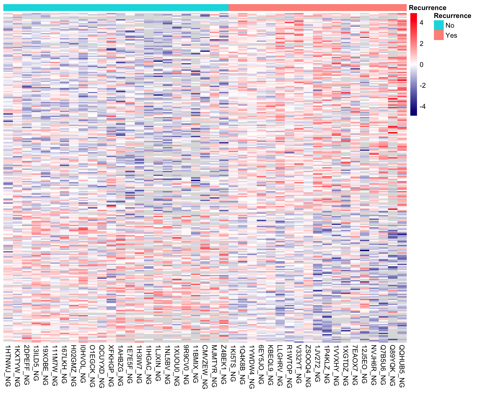
# ggsave('./output/group_meeting/heatmap_sigFeats_proNormal_Krij.png', a, device = 'png', dpi = 400, height = 8, width = 10)Visualize top significant features identified in Normal samples (ns: p > 0.05, \(*\): p <= 0.05, \(**\): p <= 0.01, \(***\): p <= 0.001)
# Prepare data matrix and metadata including both Tumor and Normal samples
datMat <- proTissueRes$data
smpAnnoTab <- proTissueRes$smpMetadata
# Prepare significant feature table
featSigAssoTab <- proNormalRes$sig.feat.tab
num_sigFeats <- 6
gpLevel = c('Yes_Normal', 'No_Normal', 'Yes_Tumor', 'No_Tumor')
condiCol = c('firebrick', 'grey50') #c(Normal, Tumor)
# Extract top significant features and prepare needed information
topSigFeats <- featSigAssoTab[1:num_sigFeats,] %>%
dplyr::select(Var1, Gene) %>%
dplyr::mutate(newVar1 = paste0(Var1, ' (', Gene, ')'),
newVar1 = factor(newVar1, levels = unique(newVar1)))
topSigFeatDat <- tibble::as_tibble(datMat[topSigFeats$Var1,], rownames = 'Var1') %>%
tidyr::pivot_longer(cols = -'Var1', names_to = 'Sample', values_to = 'Abundance') %>%
dplyr::left_join(topSigFeats, by = 'Var1') %>%
dplyr::left_join(smpAnnoTab, by = 'Sample') %>%
dplyr::mutate(Recur_Condi = paste0(Recurrence, '_', Condition),
Recur_Condi = factor(Recur_Condi, levels = gpLevel))
ggplot(topSigFeatDat, aes(x=Recur_Condi, y=Abundance, col=Condition, fill=Recurrence)) +
geom_boxplot(alpha = 1, outlier.shape = NA, linewidth = 1) +
geom_jitter(position = position_jitter(0.2), size = 2, show.legend = F) +
ggpubr::stat_compare_means(method = 't.test', paired = F, method.args = list(var.equal = T),
comparisons = list(c('Yes_Normal', 'No_Normal'), c('Yes_Tumor', 'No_Tumor')),
label = 'p.signif', tip.length = 0.015, bracket.size = 0.7, size = 4) +
labs(x = 'Recurrence') +
scale_color_manual(values = condiCol) +
scale_fill_manual(values=c('#00BFC4', '#F8766D')) +
facet_wrap(vars(newVar1), scales = 'free') +
th +
theme(strip.text = element_text(size = 13, face = 'bold'),
axis.text.x = element_text(angle = 45, hjust = 1, vjust = 1))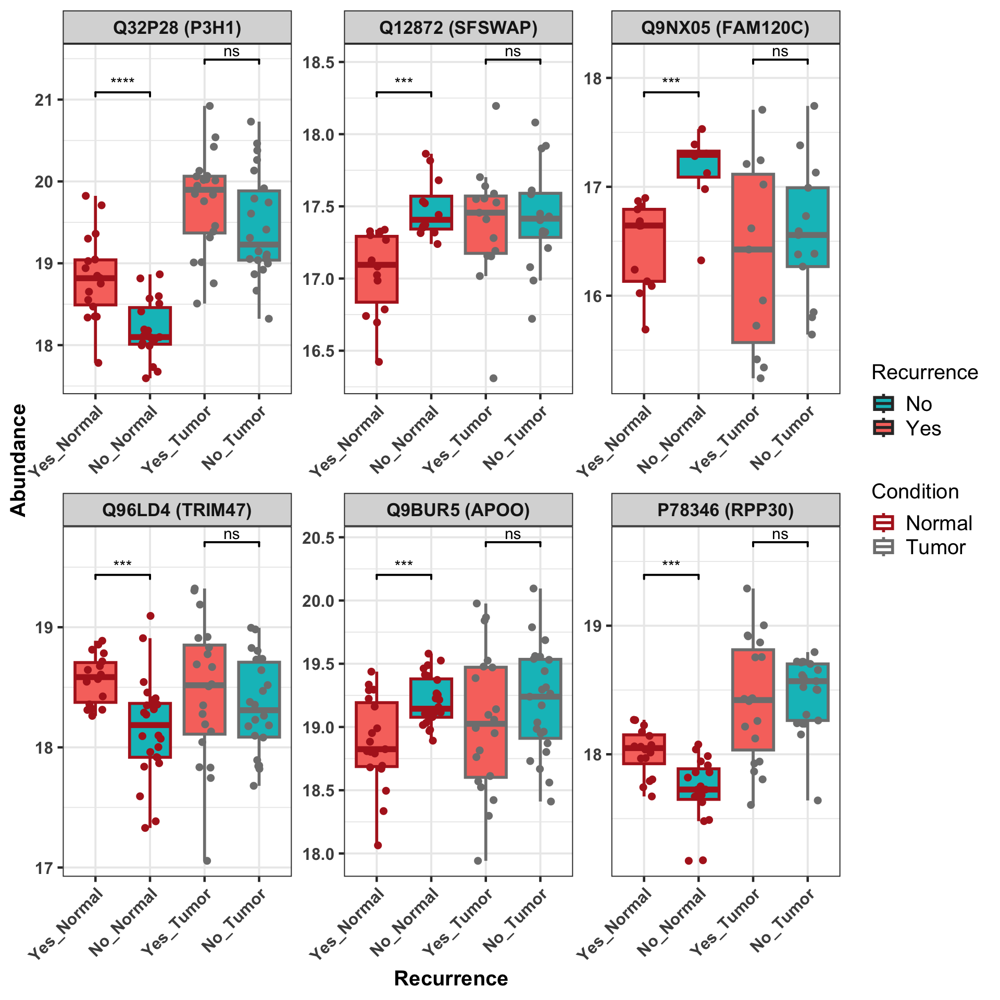
# theme(strip.text = element_text(size = 14, face = 'bold'),
# axis.text.x = element_text(angle = 45, hjust = 1, vjust = 1, size = 20),
# axis.title = element_text(size = 26),
# legend.title = element_text(size = 24), legend.text = element_text(size = 22))
# ggsave('./output/group_meeting/topSigFeats_proNormal_Krij.png', device = 'png', dpi = 400, height = 8, width = 16)Assess data power by p-value histogram
proNormalRes$pval.hist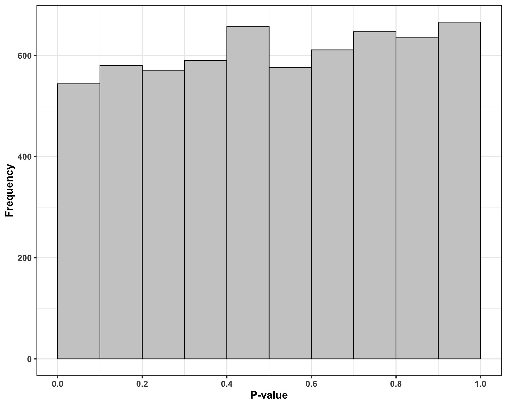
# ggsave('./output/group_meeting/histogram_pVals_proNormal_Krij.png', device = 'png', dpi = 400, height = 8, width = 10)Display significant associations between PCs (Var1) and cancer recurrence (Var2)
proNormalRes$sig.pc.tab Var1 Var2 pVal pValAdj Stat Test
1 PC7 (4%) Recurrence 0.00348 0.139 -3.1 T-test
2 PC38 (0.6%) Recurrence 0.02690 0.538 -2.3 T-testVisualize significant PCs and display their top features with greatest absolute loadings
proNormalRes$sig.pc.dist$PC7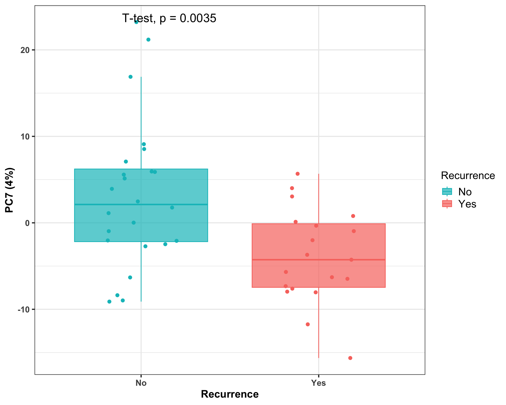
proNormalRes$pc.top.feat.tab$PC7 Feature Loading Gene
1 P49863 -0.1090 GZMK
2 P20592 -0.0946 MX2
3 P28907 -0.0788 CD38
4 Q8N5G0 -0.0681 SMIM20
5 Q02338 0.0666 BDH1
6 O14896 -0.0655 IRF6
7 P14902 0.0640 IDO1
8 Q7Z5M8 -0.0629 ABHD12B
9 Q6NUM9 0.0627 RETSAT
10 P58166 -0.0589 INHBE
11 Q96EK7 -0.0587 FAM120B
12 P07711 0.0576 CTSL
13 Q96D71 0.0540 REPS1
14 Q9UMD9 -0.0537 COL17A1
15 Q8NE62 0.0536 CHDH
16 O75976 -0.0535 CPD
17 O95210 -0.0530 STBD1
18 P13929 0.0528 ENO3
19 O95848 0.0528 NUDT14
20 Q8IWJ2 -0.0527 GCC2
21 Q8IU85 -0.0506 CAMK1D
22 Q53RD9 -0.0501 FBLN7
23 P27216 0.0499 ANXA13
24 Q8WYJ6 -0.0497 SEPTIN1
25 Q6I9Y2 -0.0485 THOC7
26 O00767 -0.0483 SCD
27 O95347 0.0482 SMC2
28 Q13888;Q6P1K8 -0.0481 GTF2H2;GTF2H2C
29 Q9HD89 0.0480 RETN
30 Q9BTE3 -0.0479 MCMBPWe first focused on analysis of Baseline plasma samples because (1) what we are most interested in is predicting recurrence, and (2) Baseline samples are less complex compared to Follow-up samples.
# Load preprocessed data
proBase <- readRDS('./data/Discovery/AG_Krijgsveld/proBaseVsn.rds')
# Prepare feature annotation table
featAnnoTab <- tibble::as_tibble(rowData(proBase), rownames = 'Protein') %>%
dplyr::select(Protein, Genes) %>%
dplyr::rename(Gene = Genes) %>%
tibble::column_to_rownames('Protein')
# Perform single-omics analysis
proBaseRes <- doSingleOmicsAnalysis(proBase, soa_metaVar = 'Recurrence', num_sigFeats = 6,
pca_method = 'ppca', num_PCs = 40, num_PCfeats = 30,
use_limma = F, use_proDA = T, feat_anno = featAnnoTab,
feat_conv = T, plot_title = NULL,
pca_metaVar = c('Recurrence', 'Gender', 'Age',
'Smoking', 'Stage', 'Adjuvant'))Display significant associations between PCs (Var1) and sample metadata variables (Var2) to overview sources of variance in data
proBaseRes$data.var.source Var1 Var2 pVal pValAdj Stat Test
1 PC19 (1.2%) Gender 0.000634 0.152 3.600 T-test
2 PC32 (0.7%) Adjuvant 0.005970 0.564 -2.850 T-test
3 PC6 (3.6%) Gender 0.007050 0.564 -2.790 T-test
4 PC13 (2%) Stage 0.011200 0.583 4.840 ANOVA
5 PC15 (1.6%) Recurrence 0.012100 0.583 -2.590 T-test
6 PC39 (0.5%) Adjuvant 0.019500 0.674 2.400 T-test
7 PC21 (1.2%) Smoking 0.020700 0.674 4.140 ANOVA
8 PC38 (0.5%) Adjuvant 0.022500 0.674 -2.340 T-test
9 PC25 (0.9%) Age 0.034400 0.910 -0.267 Correlation
10 PC36 (0.6%) Smoking 0.037900 0.910 3.460 ANOVA
11 PC35 (0.6%) Gender 0.043500 0.912 2.060 T-testDisplay significant associations between features (Var1) and cancer recurrence (Var2). Owing to missing values, there may be situation that only few observations in sample groups, resulting in unreliable t-statistics. To this end, we used probabilistic dropout model (proDA) to account for data missingness.
proBaseRes$sig.feat.tab Var1 Var2 pVal pValAdj Stat Test Gene
1 P13727 Recurrence 0.00315 0.997 3.08 T-test (proDA) PRG2
2 Q8N163 Recurrence 0.00681 0.997 -2.80 T-test (proDA) CCAR2
3 P23229 Recurrence 0.00734 0.997 -2.77 T-test (proDA) ITGA6
4 Q15582 Recurrence 0.02280 0.997 2.34 T-test (proDA) TGFBI
5 P07477 Recurrence 0.02440 0.997 -2.31 T-test (proDA) PRSS1
6 A0A075B6K5 Recurrence 0.02450 0.997 2.31 T-test (proDA) IGLV3-9
7 P00742 Recurrence 0.02470 0.997 2.30 T-test (proDA) F10
8 P09172 Recurrence 0.02640 0.997 -2.28 T-test (proDA) DBH
9 P04217 Recurrence 0.03480 0.997 2.16 T-test (proDA) A1BG
10 Q9NP78 Recurrence 0.03680 0.997 -2.14 T-test (proDA) ABCB9
11 A0A075B6I0 Recurrence 0.03800 0.997 2.12 T-test (proDA) IGLV8-61
12 P01718 Recurrence 0.04250 0.997 2.07 T-test (proDA) IGLV3-27
13 Q13093 Recurrence 0.04380 0.997 2.06 T-test (proDA) PLA2G7
14 P20742 Recurrence 0.04810 0.997 -2.02 T-test (proDA) PZP
15 A0A0A0MT36 Recurrence 0.04820 0.997 2.02 T-test (proDA) IGKV6D-21# Immunoglobulins (antibodies) are membrane-bound or secreted glycoproteins produced
# by B lymphocytes. In recognition phase of humoral immunity, membrane-bound immunoglobulins
# serve as receptors which, upon binding of a specific antigen, trigger clonal expansion
# and differentiation of B lymphocytes into immunoglobulins-secreting plasma cells.
# Secreted immunoglobulins mediate effector phase of humoral immunity, which results
# in elimination of bound antigens.# Check Gender (PC1) and Smoking (PC6) to avoid potential confounders
# Identify significant associations between features and patient genders
proBaseSex <- doSingleOmicsAnalysis(proBase, soa_metaVar = 'Gender', use_proDA = T)
sigFeatsSex <- proBaseSex$sig.feat.tab$Var1
sigFeatsRecur <- proBaseRes$sig.feat.tab$Var1
sigFeatsRecur[sigFeatsRecur %in% sigFeatsSex]
# Protein 'P20742', 'Q0VDD7', and 'P02768' are also significantly associated with patient genders.
# Protein encoded by PZP is highly expressed in late-pregnancy serum, which can
# inhibit proteinases by its unique trapping mechanism. Appears to be elevated in
# sera of presymptomatic Alzheimer's disease patients. HCG is present during pregnancy,
# yet it relates to testicular carcinoma (tumor marker) when present in sera of males.
# Protein encoded by BRME1 (Break Repair MEiotic recombinase recruit factor 1) is
# predicted to be involved in meiosis 1 (meiotic double-strand break repair) and
# spermatogenesis (male fertility).
# ALB encodes most abundant protein albumin in human blood, which functions in regulation
# of blood plasma colloid osmotic pressure and acts as carrier protein for endogenous
# molecules hormones, fatty acids, and metabolites, and as well as exogenous drugs.Visualize molecular signatures of significant features in data. Note that features in rows are ordered by t-statistics.
proBaseRes$sig.feat.heat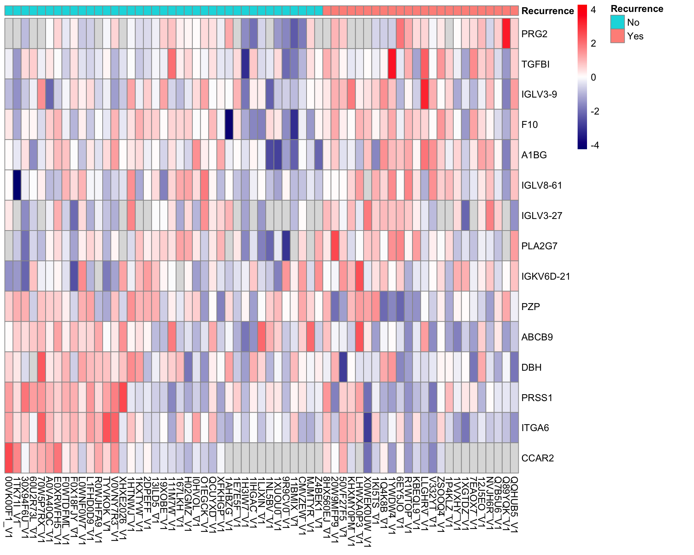
Visualize top significant features
proBaseRes$top.sig.feat.dist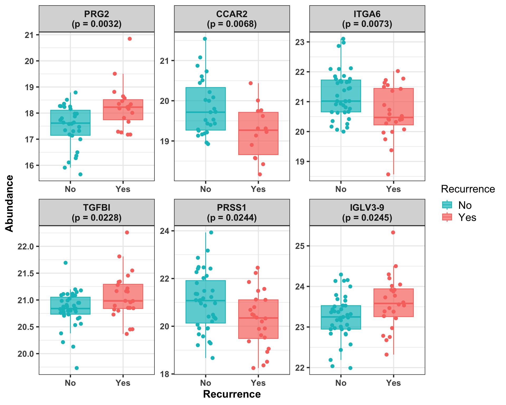
Assess data power by p-value histogram
proBaseRes$pval.hist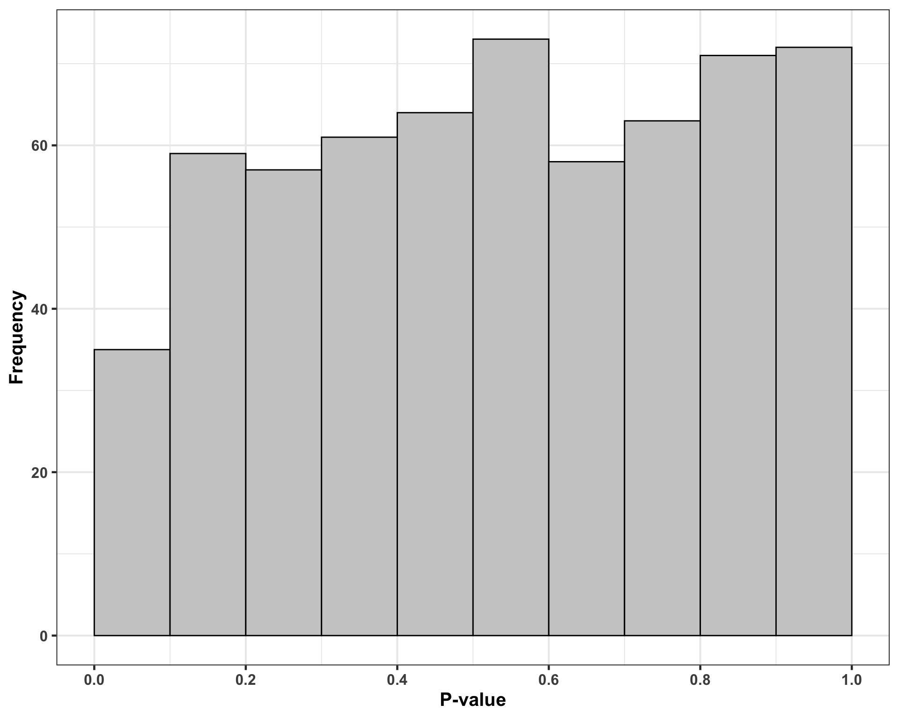
Display significant associations between PCs (Var1) and cancer recurrence (Var2)
proBaseRes$sig.pc.tab Var1 Var2 pVal pValAdj Stat Test
1 PC15 (1.6%) Recurrence 0.0121 0.486 -2.59 T-testVisualize significant PCs and display their top features with greatest absolute loadings
proBaseRes$sig.pc.dist$PC15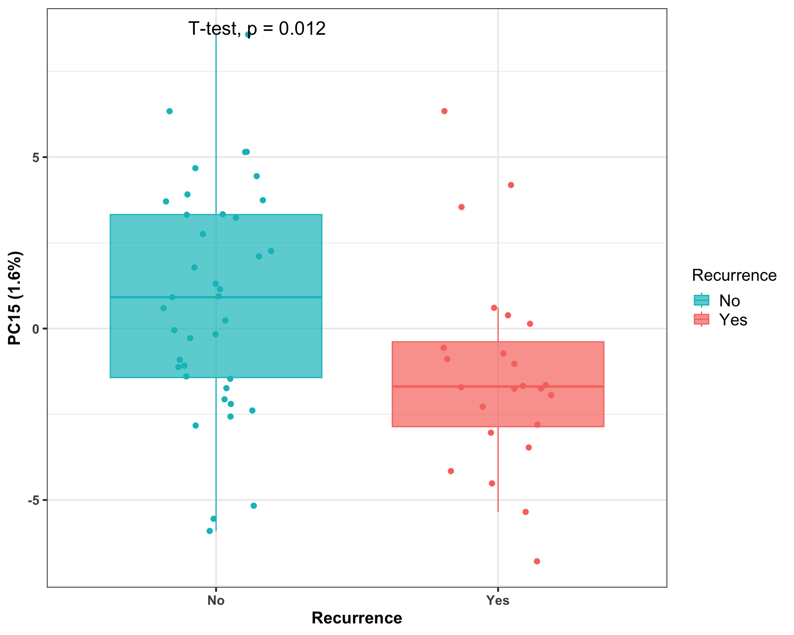
proBaseRes$pc.top.feat.tab$PC15 Feature Loading Gene
1 A0A0J9YXX1 0.2150 IGHV5-10-1
2 P08519 -0.1890 LPA
3 P12429 -0.1880 ANXA3
4 A0A087WW87;P01614 0.1870 IGKV2-40;IGKV2D-40
5 P05062 0.1530 ALDOB
6 P40197 0.1310 GP5
7 P01880 -0.1270 IGHD
8 P01704 -0.1240 IGLV2-14
9 P04899 0.1210 GNAI2
10 P05109 -0.1160 S100A8
11 P20742 0.1160 PZP
12 P61160 -0.1150 ACTR2
13 P00738 -0.1140 HP
14 Q9NZN3 0.1130 EHD3
15 P02751 0.1120 FN1
16 P14770 -0.1090 GP9
17 P46781 -0.1060 RPS9
18 O15027 0.1040 SEC16A
19 P54253 -0.1030 ATXN1
20 P09486 -0.1010 SPARC
21 P40926 0.1000 MDH2
22 P04275 0.0991 VWF
23 P48735 0.0974 IDH2
24 P02741 -0.0951 CRP
25 A0A075B6R2 0.0942 IGHV4-4
26 P23229 0.0899 ITGA6
27 P18031 0.0884 PTPN1
28 P01742 -0.0883 IGHV1-69
29 P02730 -0.0878 SLC4A1
30 P28065 -0.0878 PSMB9
sessionInfo()R version 4.3.2 (2023-10-31)
Platform: aarch64-apple-darwin20 (64-bit)
Running under: macOS Sonoma 14.5
Matrix products: default
BLAS: /Library/Frameworks/R.framework/Versions/4.3-arm64/Resources/lib/libRblas.0.dylib
LAPACK: /Library/Frameworks/R.framework/Versions/4.3-arm64/Resources/lib/libRlapack.dylib; LAPACK version 3.11.0
locale:
[1] en_US.UTF-8/en_US.UTF-8/en_US.UTF-8/C/en_US.UTF-8/en_US.UTF-8
time zone: Europe/Warsaw
tzcode source: internal
attached base packages:
[1] stats4 stats graphics grDevices utils datasets methods
[8] base
other attached packages:
[1] sva_3.50.0 BiocParallel_1.36.0
[3] genefilter_1.84.0 mgcv_1.9-1
[5] nlme_3.1-164 visdat_0.6.0
[7] vsn_3.70.0 lubridate_1.9.3
[9] forcats_1.0.0 stringr_1.5.1
[11] dplyr_1.1.4 purrr_1.0.2
[13] readr_2.1.5 tidyr_1.3.1
[15] tibble_3.2.1 tidyverse_2.0.0
[17] SummarizedExperiment_1.32.0 GenomicRanges_1.54.1
[19] GenomeInfoDb_1.38.8 IRanges_2.36.0
[21] S4Vectors_0.40.2 MatrixGenerics_1.14.0
[23] matrixStats_1.3.0 ggrepel_0.9.5
[25] ggplot2_3.5.1 ggplotify_0.1.2
[27] pheatmap_1.0.12 proDA_1.16.0
[29] limma_3.58.1 pcaMethods_1.94.0
[31] Biobase_2.62.0 BiocGenerics_0.48.1
[33] workflowr_1.7.1
loaded via a namespace (and not attached):
[1] RColorBrewer_1.1-3 rstudioapi_0.16.0 jsonlite_1.8.8
[4] magrittr_2.0.3 farver_2.1.2 rmarkdown_2.27
[7] fs_1.6.4 zlibbioc_1.48.2 vctrs_0.6.5
[10] memoise_2.0.1 RCurl_1.98-1.14 rstatix_0.7.2
[13] htmltools_0.5.8.1 S4Arrays_1.2.1 broom_1.0.5
[16] SparseArray_1.2.4 gridGraphics_0.5-1 sass_0.4.9
[19] bslib_0.7.0 plyr_1.8.9 extraDistr_1.10.0
[22] cachem_1.1.0 whisker_0.4.1 lifecycle_1.0.4
[25] pkgconfig_2.0.3 Matrix_1.6-5 R6_2.5.1
[28] fastmap_1.2.0 GenomeInfoDbData_1.2.11 digest_0.6.35
[31] colorspace_2.1-0 AnnotationDbi_1.64.1 ps_1.7.6
[34] rprojroot_2.0.4 RSQLite_2.3.6 ggpubr_0.6.0
[37] labeling_0.4.3 fansi_1.0.6 timechange_0.3.0
[40] httr_1.4.7 abind_1.4-5 compiler_4.3.2
[43] bit64_4.0.5 withr_3.0.0 backports_1.4.1
[46] carData_3.0-5 DBI_1.2.2 highr_0.11
[49] ggsignif_0.6.4 DelayedArray_0.28.0 tools_4.3.2
[52] httpuv_1.6.15 glue_1.7.0 callr_3.7.6
[55] promises_1.3.0 grid_4.3.2 getPass_0.2-4
[58] generics_0.1.3 gtable_0.3.5 tzdb_0.4.0
[61] preprocessCore_1.64.0 hms_1.1.3 car_3.1-2
[64] utf8_1.2.4 XVector_0.42.0 pillar_1.9.0
[67] yulab.utils_0.1.4 later_1.3.2 splines_4.3.2
[70] lattice_0.22-6 survival_3.5-8 bit_4.0.5
[73] annotate_1.80.0 tidyselect_1.2.1 locfit_1.5-9.9
[76] Biostrings_2.70.3 knitr_1.47 git2r_0.33.0
[79] edgeR_4.0.16 xfun_0.44 statmod_1.5.0
[82] stringi_1.8.4 yaml_2.3.8 evaluate_0.23
[85] codetools_0.2-20 BiocManager_1.30.22 cli_3.6.2
[88] affyio_1.72.0 xtable_1.8-4 munsell_0.5.1
[91] processx_3.8.4 jquerylib_0.1.4 Rcpp_1.0.12
[94] png_0.1-8 XML_3.99-0.16.1 parallel_4.3.2
[97] blob_1.2.4 bitops_1.0-7 scales_1.3.0
[100] affy_1.80.0 crayon_1.5.2 rlang_1.1.4
[103] KEGGREST_1.42.0